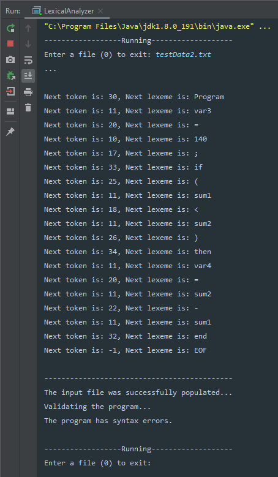
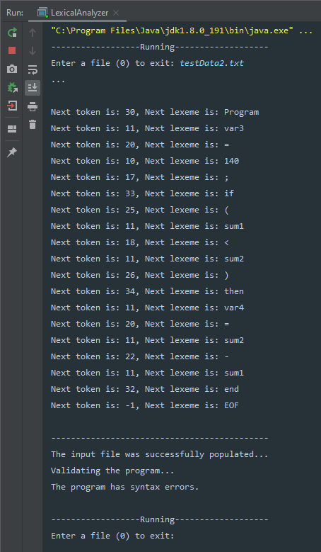

About
What is a Brain-Computer Interface (BCI)?

Brain-Computer Interfaces (other known as BCI) are a type of interface that allows communication between a brain and an external computing device. Brain-Computer Interfaces require brain signals, and after analyzing them, translates them into commands to carry out a desired action on an output device.
Brain-Computer Interfaces may allow a user to communicate with another user through the use of an EEG (Electroencephalography) and monitor displaying output. Brain-Computer Interfaces can also improve and restore a human’s motor skills by stimulating specific nerves and/or muscles in the body.[1]
Brain-Computer Interfaces are used daily within the medical, neuroergonomics and smart environment, neuromarketing and advertising, educational and self-regulation, games and entertainment, and security and authentication fields.[2]
The medical field uses the functionality of BCI’s such as preventing addiction and detrimental physical aspects within human health, detecting malignant growths and help diagnose disorders, and helping rehabilitate patients after they face severe trauma.[2]
Brain-Computer Interfaces allow easier forms of communication since ideas can be displayed visually through BCI (Brain-Computer Interfaces) rather than attempting to verbally form an idea.[2]
In the gaming field, Valve announced that they are working with OpenBCI headsets with the goal of writing signals to people’s brains. Most technology is currently just trying to read brain signals, but Gabe Newell, co-founder and president of Valve, says “The real world will seem flat, colorless, blurry, compared to the experiences you’ll be able to create in people’s brains.” The software they are developing will be open-source and has the goal of allowing developers to better understand brain signals. [3]
The 5 Types of BCI:

Electroencephalography (EEG)
To mark the electrical activity generated by the brain through electrodes on the surface of the scalp.

Functional magnetic resonance imaging (fMRI)
It measures activities of the brain by revealing changes associated with blood flow.

Functional Near-Infrared Spectroscopy (fNIRS)
This type of BCI is used for functional neuroimaging, thus the ability to create images in our mind.

Convolutional Neural Network (CNN)
This type of BCI is used in image recognition and processes pixel data.

Visual Cortex
This type of BCI processes nerve impulses coming from the eyes.


 
